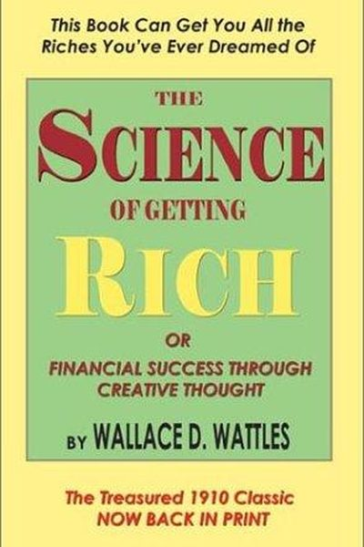

Why Did Allen Stanford Fail?
The Billionaire Who Ran the Largest Ponzi Since Madoff
📜 What Happened
Sir Allen Stanford — knighted, celebrated, owner of cricket leagues and Caribbean banks — was the 'king of cricket' and one of the world's richest men. His Stanford International Bank promised investors spectacular, consistent returns on certificates of deposit, backed by a 'highly liquid, globally diversified' portfolio. For 20 years the money flowed in from 30,000 investors — many of them retirees in Latin America and the Caribbean who trusted the knighted billionaire with their life savings. The returns were a fiction: the 'diversified portfolio' was mostly real estate and an office tower, the returns were paid from new deposits, and the whole structure was a Ponzi scheme dressed in a cricket blazer. In 2009 the SEC caught up; Stanford was convicted of 13 counts of fraud and sentenced to 110 years. Thousands of elderly investors lost everything, and a system that was supposed to protect them had been charmed for two decades.
☠️ The Fatal Mistake
Wrapping a fraud in fame, sport and nationality — Stanford weaponised trust itself: the cricket, the knighthood, the Caribbean identity.
🧠 The Lesson (Free for You)
The Stanford test for any 'guaranteed return': who exactly is this person, and why would they need my money? The largest frauds in history are not run by strangers — they are run by beloved public figures whose fame is the product. Every one of Stanford's 30,000 investors thought they were smarter than the crowd; the crowd was the point. If the promise is too consistent, the promoter is too charming, and the verification is too hard — the returns are the product, and you are the inventory.
📕 The Antidote Book

Written in 1910, Wattles' tiny book argues wealth is not a zero-sum game: there is a thinking stuff from which all things are made, and by thinking in a 'Certain Way' — clear vision, gratitude, and action in the…
📖 OPEN THE FULL INTERACTIVE BREAKDOWN →Searchable, filterable, free forever — they paid billions; your lesson is free.